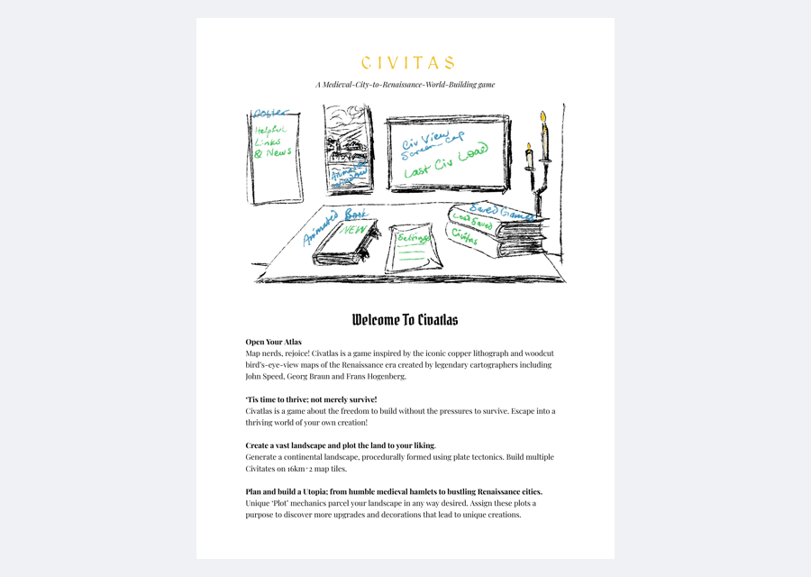
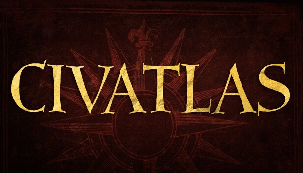
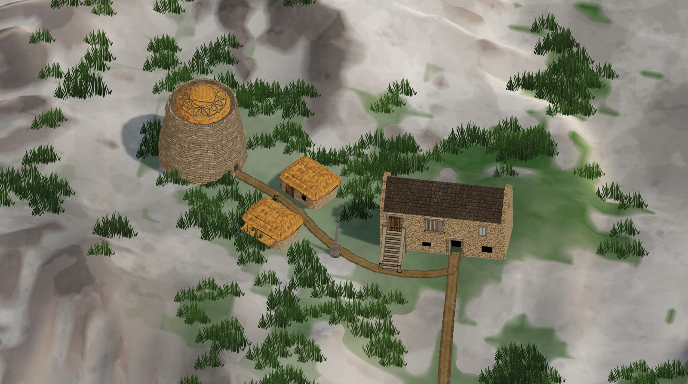
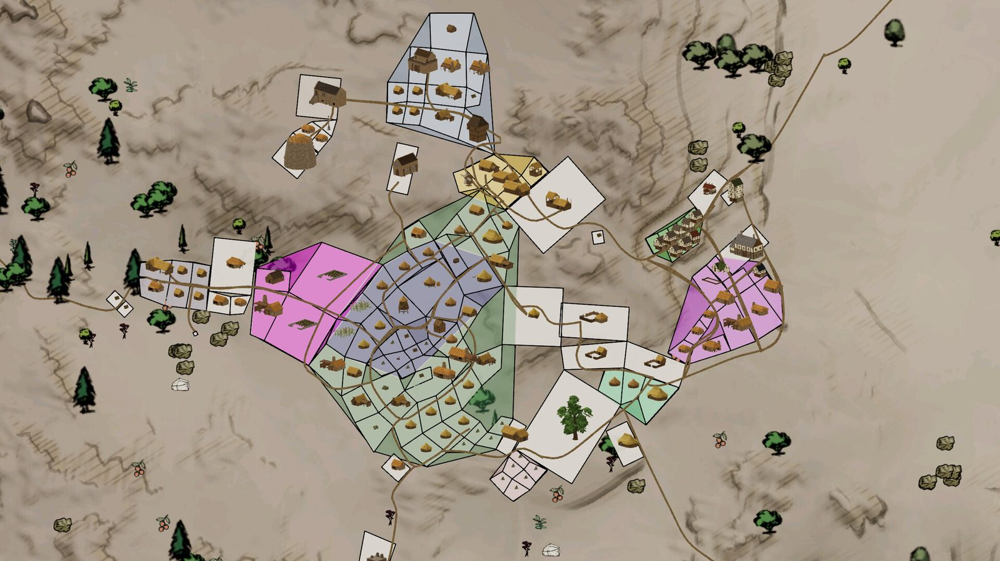
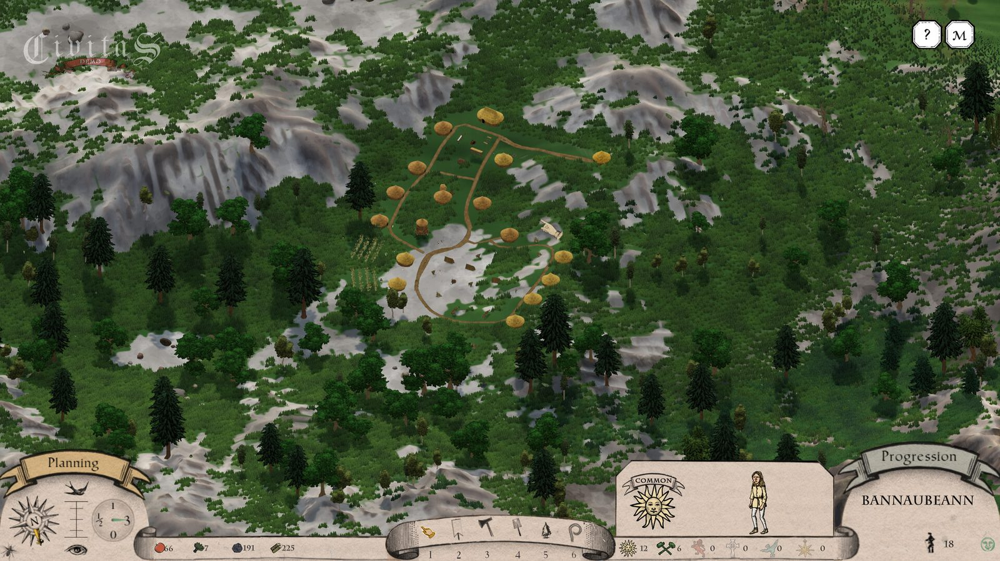
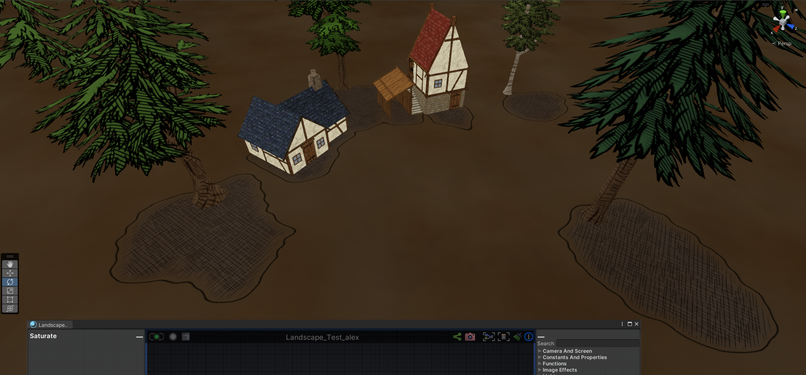
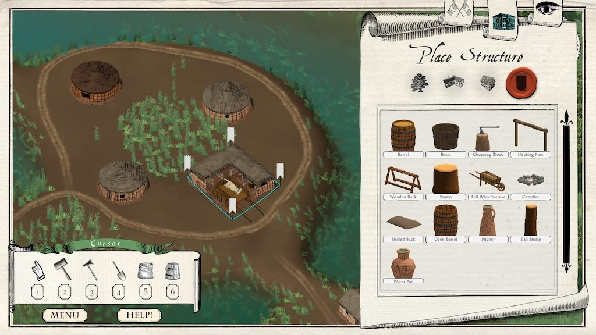
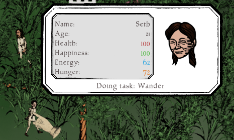
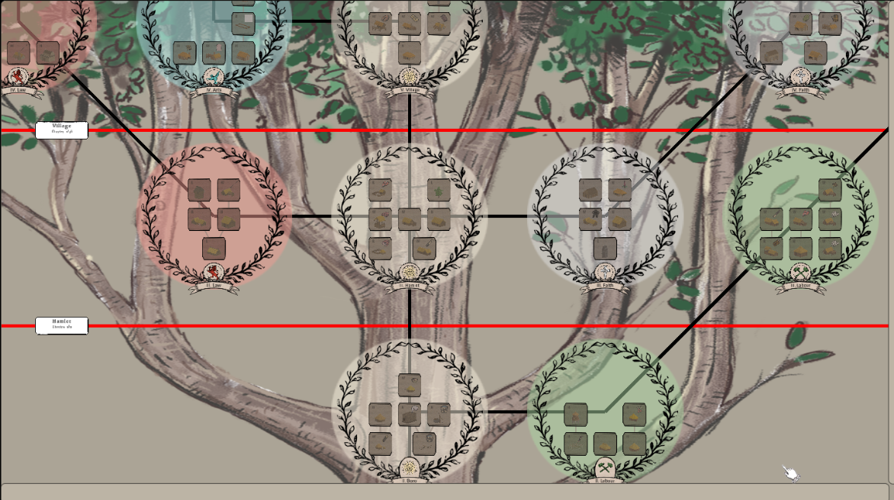
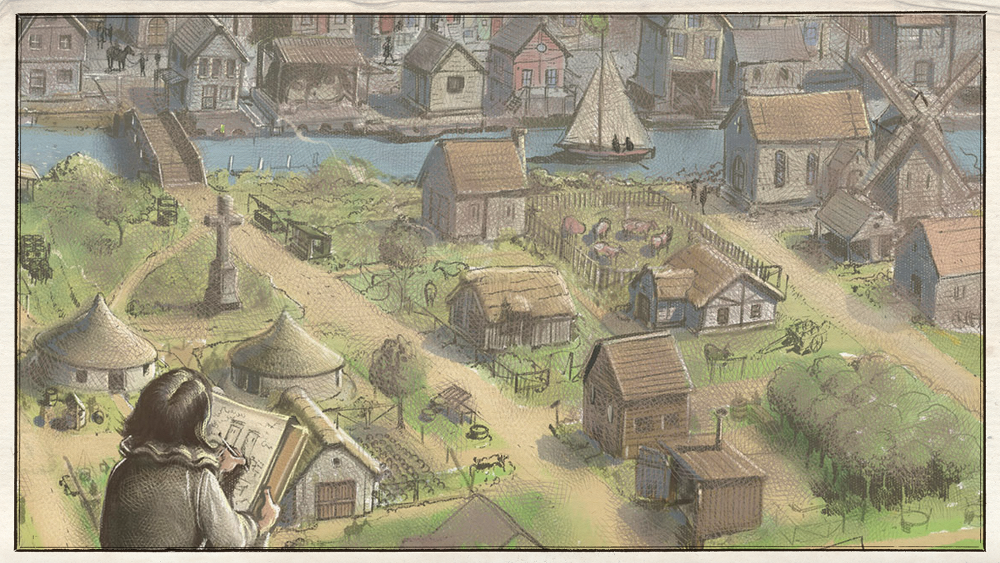

Civatlas Design Document
Working design document snapshot from active production. The project name changed from Civitas to Civatlas during development.
Sharp End Studio
Game Designer / General Design Lead · September 2021 – April 2023
Historical city-builder developed toward Early Access. I worked as the general design lead from concept through Early Access preparation across systems design, production planning, wireframes, implementation support, UI and audio prototyping, artist reference, and day-to-day design leadership. In practice, that meant turning broad intent into usable feature direction: defining worker behavior, improving settlement readability, clarifying economy and production flow, reviewing execution across the team, and converting playtest or implementation friction into concrete design changes the project could act on.
The project was renamed from Civitas to Civatlas during production. This PDF is a mid-production live document snapshot rather than a pitch deck, showing the project in motion while the team was actively building toward release.

Working design document snapshot from active production. The project name changed from Civitas to Civatlas during development.








